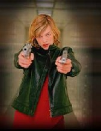
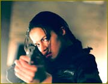

|
惡靈古堡Movie-----人物介紹
|

|
Milla Jovovich /
~Alice
從九歲開始進入演藝圈的Milla Jovovich，可以說是法國首屈 一指的動作片女星，而且她也是少數幾位能列入國際級女星 的法國女星。她還和山繆傑克森一起拍一部《No Good Deed》 ，是一部警匪驚悚電影。她還和威廉包德溫一起主演她從未 嘗試過的愛情喜劇《You Stupid Man》。 Milla Jovovich曾經拍過的電影也都是觀眾耳熟能詳的大片， 像她和布魯斯威利主演的科幻動作片《第五元素》，和梅爾 吉勃遜合演的《百萬大飯店》，還有戰爭史詩電影《聖女貞 德》，片中她飾演剽悍的聖女貞德，另外還有達斯汀霍夫曼 和費唐娜薇及約翰馬可維奇等重量級的演員跟她搭配。 其實Milla Jovovich從11歲就開始在伸展台上走台步，而從小 就接觸音樂和吉他，相當有天份，因為她15歲就會寫歌，所 以可以說從小就顯露她非常的多才多藝。她第一年從事模特 兒的行業時就登上了15家流行雜誌的封面，可見她的光芒耀 眼，而到目前為止Milla仍然是萊雅的代言人之一。 原本替Umbrella的地下研究所擔任守衛的工作，駐守在郊外 的洋館中，原要為間諜Lisa取證據，但還沒行動就受到病毒 外洩導致紅后釋放之氣體影響，暫時失去了記憶。 身手一流，是唯一沒受到傷害的生還者。 |
 |
Michelle Rodrigue /
~Rain
Michelle所主演的第一部電影《Girlfight》，她的表現就獲得 了許多影評的讚賞，還有「2001年獨立精神獎」的最佳新 人表現獎，還有「2001國家影評協會」頒發的「年度最佳 表演」，蜜雪兒羅莉葛茲還為了這部電影練了五個月的拳 擊。 除此之外她在票房電影《玩命關頭》中也是表現突出，而 《2002惡靈古堡》更是將她希望成為動作女星的夢想往前 推進一大步。 掌管武器機械，原屬於海軍特殊部隊，後來為Umbrella公司 僱用，保護大本營的安全。 逃出了大本營，卻受到病毒感染來不及救治變成殭屍。 |
| Eric Mabius / ~Matt
在《Welcome to Dollhouse》 (獲得1996年Sundance影展的評審 團大獎) 嶄露頭角。他也曾參與《I Shot Andy Warhol》、 《The Journey of the August King》及一些電視影片和舞台劇的 演出。他曾拍過二部相當受歡迎的獨立製片電影 《Lawn Dogs》及《The Black Circle Boys》。近作則是 《危險性遊戲 》 (Cruel Intentions)。 因為以激烈手段從事反Umbrella的運動而被通緝，派妹妹混入 Umbrella之中盜取證據，病毒爆發後冒充警察身分試圖潛入。 逃出大本營後手臂上的傷痕出現異狀，被Umbrella視為值得實 驗的對象抓走了。 |
|
| James Purefoy /
~Spence
和Alice同為Umbrella工作，為掩飾身分和Alice假結婚，後來財 迷心竅監守自盜，還散播病毒使得Umbrella癱瘓，在逃離途中 同樣受影響失去記憶。 當他想獨自一人帶著病毒逃出時，卻慘遭變異生物毒手。 |
|
| Martin Crewes /
~Kaplan
專精電子機械，曾經是軍人，後來為Umbrella公司僱用，保護 大本營的安全。 受到感染後意志堅強的活下來，在駕駛電車時遭到變異生物 吞噬。 |
|
| Colin Salmon / ~One
部隊的隊長，冷靜穩重，和隊員的感情很深厚，為Umbrella 公司僱用，保護大本營的安全。 執行任務時不慎觸動紅后的防衛系統，在將被解救的前一刻 喪失了求生的意志而失去性命。 |
|
| Pasquale Aleardi /
~J.D.
為Umbrella公司僱用，保護大本營的安全。 輸入密碼準備逃離的時候沒有注意大群的殭屍，最後變成他 們的同類出現在眾人面前。
|
|
| Heike Makatsch /
~Lisa
Matt的妹妹，Umbrella地下研究所的秘書，原本和Alice洽談好 拿取病毒當作證據，卻被Spence得知而遭到背叛死在大本營 之中。 |
惡靈深淵Biohazard Abyss http://98.to/coolbio